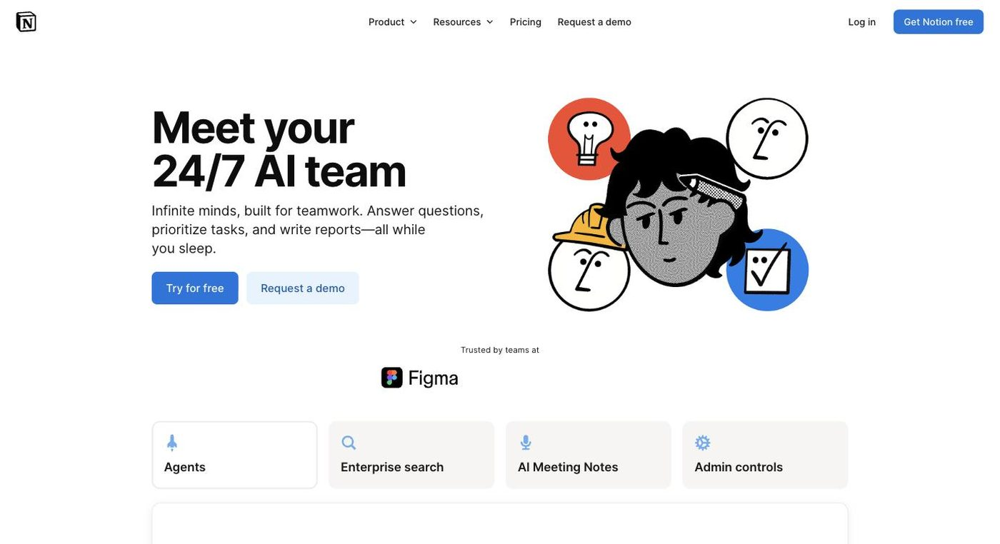

Notion AI
AI writing, Q&A and agent built into your Notion workspace

- Category
- Productivity & Automation
- Pricing
- Free and Plus include only a limited AI trial; full Agent, AI Meeting Notes and Enterprise Search on Business at $20/member/mo; Custom Agents $10 per 1,000 credits
- Best for
- For teams that already use Notion as their docs, wiki and project hub and want AI grounded in that content, especially if they will pay for Business.
- Official site
- www.notion.so/product/ai
- Last checked
- 2026-10-16
Notion AI is worth it if your team already lives in Notion and wants AI that can read your pages, databases and connected apps. Skip it if you want a standalone AI writer, or if you only plan to use the Free or Plus plans, because those include just a limited AI trial.
It covers writing and summarizing inside pages, answering questions from workspace content, AI Meeting Notes, Enterprise Search (beta) across tools like Slack and GitHub, Research mode (beta) for reports, and an Agent that carries out multi-step tasks. Custom Agents are free to try, then billed at $10 per 1,000 monthly Notion credits.
For teams that already use Notion as their docs, wiki and project hub and want AI grounded in that content, especially if they will pay for Business. Not for people shopping for a general AI writing tool, for Free/Plus users expecting unlimited AI, or for teams hoping AI will fix a disorganized workspace.
Key features
Notion Agent
Handles multi-step tasks using Notion pages, connected apps and the web. Full access is on Business and up.
Writing and Q&A
Draft, rewrite and summarize in-page and ask questions answered from your workspace.
AI Meeting Notes
Transcribes and summarizes meetings; Business and up.
Enterprise Search
Searches Notion plus connected tools; marked beta, on Business and Enterprise.
Research mode
Deeper reasoning to produce reports from workspace and web sources; marked beta.
Custom Agents and Workers
Free to try, then $10 per 1,000 monthly Notion credits; Workers (beta) also use credits.
Enterprise data controls
Zero data retention with LLM providers on Enterprise.
Pricing breakdown
Free
- Trial of Notion AI
- Agent, Meeting Notes, Enterprise Search and Research are limited trial only
Plus
- Same limited AI trial as Free
- More workspace capacity than Free
Business
- Notion Agent
- AI Meeting Notes
- Enterprise Search (beta)
- Research mode (beta)
Enterprise
- Everything in Business
- Zero data retention with LLM providers
Custom Agents add-on
- Credits also used by Workers (beta)
Pros and cons
Pros
- Answers draw from your own pages and databases
- Writing, summaries and Q&A stay inside the page you are working on
- Agent executes tasks rather than only generating text
- Meeting notes without a separate notetaker
- Search extends to connected apps like Slack and GitHub
- Sensible value if the team needs Business anyway
Cons
- Free and Plus only trial the AI features
- Business price applies to every member who needs the AI
- Credit billing for Custom Agents and Workers is hard to forecast
- Enterprise Search and Research are still beta
- The page does not clearly state usage limits for Business AI features
- Results depend on workspace organization and size
Alternatives to Notion AI
Frequently asked questions
Do I need a paid plan for Notion AI?
For real use, yes. Free and Plus include only a limited trial; Agent, Meeting Notes and Enterprise Search come with Business at $20/member/mo.
What do Custom Agents cost?
Free to try, then $10 per 1,000 monthly Notion credits. The pricing page does not state how many credits each plan includes.
Can it search Slack or GitHub?
Enterprise Search (beta) is listed on Business and up, searching connected tools alongside Notion content.
Is there an annual discount?
The page says yearly billing saves up to 20% but does not show annual prices.
Notion AI or ClickUp AI?
Notion fits docs and wiki-first teams; ClickUp fits task and project management-first teams.
Ready to try Notion AI?
Head to the official site to explore pricing and start a free trial where available.
Visit Notion AI →